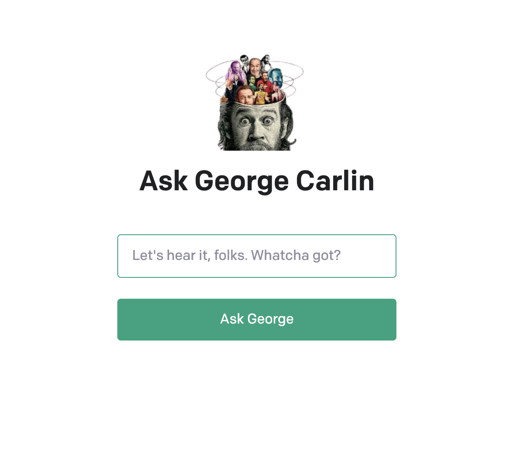

This project leverages the power of OpenAI API to bring to life a conversational
AI bot modeled after the iconic stand-up comedian, George Carlin.
I created an asynchronous server-side function using Node.js to interact with OpenAI's GPT-3 API.
My function takes user input and crafts a custom prompt to instruct the GPT-3 model to emulate comedian George Carlin's unique style and humor.
I've also implemented error handling and input validation, ensuring that the final generated text is sent back as a JSON response.
Ask George a question 👉
https://george-carlin-bot.vercel.app/
